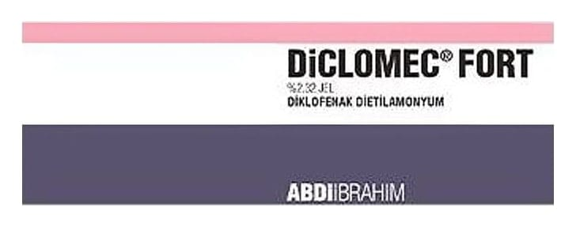

Diclomec Fort %2.32 Jel, 50 Gram

Ne için kullanılır
KT · Bölüm 1• DİCLOMEC FORT etkin madde olarak diklofenak dietilamonyum içeren, beyaz veya beyazımsı, opak homojen krem görünümünde jel formunda bir ilaçtır. • DİCLOMEC FORT haricen kullanılan non-steroidal antiinflamatuvar preparatları olarak adlandırılan bir ilaç grubuna dahildir. • DİCLOMEC FORT, 50 g’lık tüpler ile kullanıma sunulmaktadır. • DİCLOMEC FORT aşağıdaki hastalıkların bölgesel şikayetlere yönelik tedavisinde ağrı kesici (analjezik) ve iltihap giderici (antiinflamatuvar) olarak etkilidir:
o Kas ve eklem yaralanmaları (örn. burkulmalar, incinmeler, ezilmeler, sırt ağrısı, spor yaralanmaları), ağrıyı hafifletme ve normal fonksiyona geri dönmeye yardımcı olma;
o Tendinit gibi yumuşak doku romatizmasının lokalize formları (örn. tenisçi dirseği), dirsek veya diz çevresindeki eklem hastalıklıkları, şişlik.